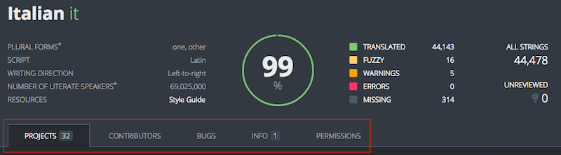
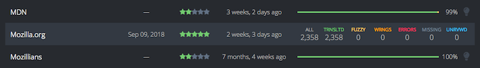
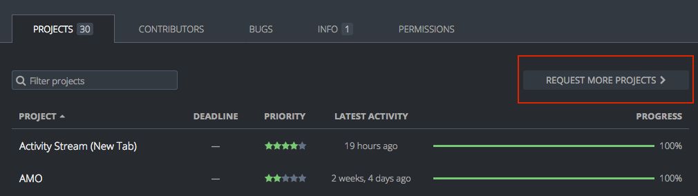
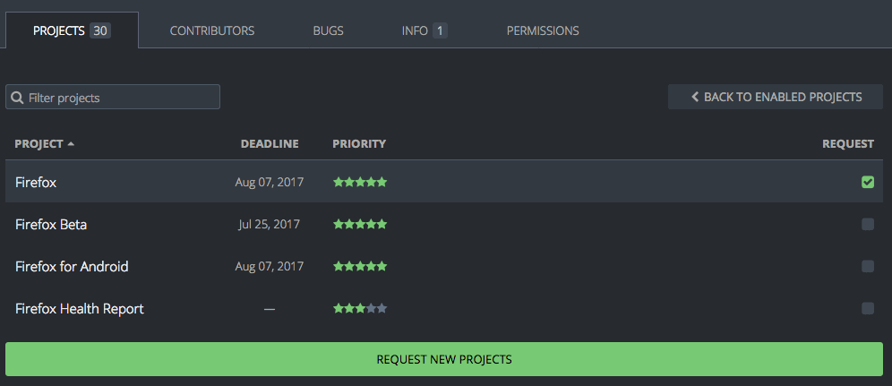
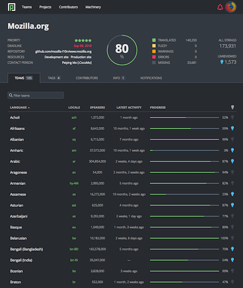
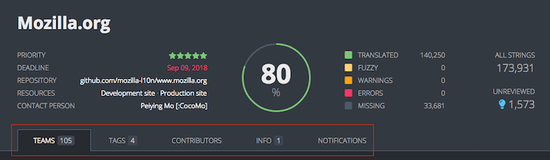

Teams and projects
The Teams page lists all locales that are enabled in Pontoon. From here you can access a specific Team page, where you’ll get a list of all projects enabled for the requested locale. Selecting a project from the Team page will take you to what is called the Localization page.
From each locale’s Team page it’s also possible to request a project, that is asking to add that locale to a project already available in Pontoon, not asking to support localization for a brand new project.
The Projects page lists all projects that are available in Pontoon. From here you can access the list of locales that are enabled for the requested project. This is called a Project page in Pontoon. By selecting a locale in the Project page you access the Localization page.
There is also a special Localization page that allows to access all resources for all projects enabled for a specific locale: /locale/all-projects/all-resources.
The following diagram shows how these pages are organized and connected to each other:

Team page
You can access a team’s page by selecting it from the Teams page or by appending /YOUR_LOCALE_CODE to the URL, e.g. https://pontoon.mozilla.org/it for Italian.
This is a screenshot of the Italian team page:

The page header contains linguistic information about the current locale (plural form, writing direction, etc.), plus an indication of the overall status of completion and statistics. The statistics displayed in the rightmost column are active links to access the Localization page for all projects, for example to reach all missing strings across projects available for Italian in Pontoon.

There are 4 tabs available (highlighted in red), 5 if you’re an admin or manager:
- Projects: a list of all projects enabled in Pontoon for this locale.
- Contributors: a list of active contributors with their statistics, filterable by time (all time, 1/3/6/12 months).
- Bugs: a list of open bugs for this locale, retrieved from Bugzilla.
- Info: information about the team. Team managers can edit it by clicking on the Edit button.
- Permissions: manage user permissions (see this document for details).
Hovering a project in the list will replace the progress bar with a set of detailed statistics (untranslated strings, missing strings, etc.). Note that all these numbers are links, so you can use them to open the project with a filter already enabled, for example to display only missing strings. You can click on the number of total strings to access All Resources (i.e. all strings in all files) for this project.
The rightmost column in the table will display a blue lightbulb icon if there are unreviewed strings. The icon in the table header can be used to sort rows based on the number of unreviewed strings.

Requesting a project
It’s possible to request a project from a locale’s Team page.

Click on REQUEST MORE PROJECTS (highlighted in red), select the project you want to add and then click REQUEST NEW PROJECT (you need to select at least one project for the button to be displayed).

An email will be sent to Pontoon’s administrators, and the localization driver in charge of the project will act on the request. Please note that:
- Some projects have a closed list of supported locales, meaning that you can’t request the project on Pontoon.
- Some projects can be requested but eventually not enabled, because of practical restrictions related to the project itself (e.g. lack of support for the locale in iOS).
Project page
You can access a project’s page by selecting it from the Projects page.
This is a screenshot of the Mozilla.org project page:

The page header contains useful information about the current project:
- Priority: it goes from 5 stars (highest priority) to 1 star (lowest priority).
- Deadline: set only for some projects, it indicates when the translation is due.
- Repository: link to the repository storing translations for this project.
- Resources: links to useful external resources. Custom links can be defined for each project.
- Contact person: localization driver in charge of this project.
It also includes an indication of the overall status of completion and statistics across all enabled languages.

There can be up to 4 tabs available (highlighted in red):
- Teams: a list of all locales enabled in Pontoon for this project.
- Tags: a list of tags defined for this project. This tab will be visible only in projects where tags are enabled. For more information about tags, see this page.
- Contributors: a list of active contributors with their statistics, filterable by time (all time, 1/3/6/12 months).
- Info: information about this project.
Requesting a language
It’s possible to request an additional language for a project from its Project page.

Click on REQUEST NEW LANGUAGE (highlighted in red), select the language you want to add and then click REQUEST NEW LANGUAGE.
An email will be sent to Pontoon’s administrators, and the localization driver in charge of the project will act on the request. The same restrictions described in the Requesting a project section apply here.
Localization page
You can access a project’s Localization page in two ways:
- By selecting it from the Team page.
- By selecting it from the Project page.
The page header contains useful information about the current project (same as the Project page).

There are 4 tabs available (highlighted in red):
- Resources: files available in the project.
- Tags: a list of tags defined for this project. This tab will be visible only in projects where tags are enabled. For more information about tags, see this page.
- Contributors: a list of active contributors with their statistics, filterable by time. Unlike the tab available in the Team page, this only includes contributions to localization of the project for the current locale.
- Project info: information about the project.
- Team info: same content as the Info tab in the Team page.